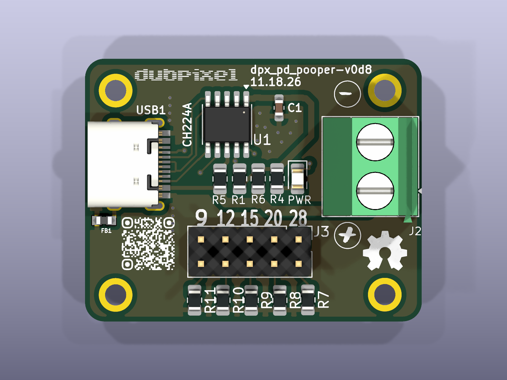

dpx_pd_pooper // v0d8 ch224a
pd poops on tap
plug in a usb-c pd charger. shunt a jumper. get 9, 12, 15, 20 or 28 volts on a screw terminal.
github how to use itquick ref
| thing | value |
|---|---|
| board | 35.0 x 27.3 mm, 2 layer, 4x M3 holes |
| pd chip | WCH CH224A, resistor configured. no firmware, no i2c. |
| input | usb-c (HRO TYPE-C-31-M-12), PD sink |
| output | J2 two-pin 5.08 mm screw terminal, labelled + and - |
| selector | J3 (VSEL) 2x5 header, shunt one column |
| indicator | PWR led (lights with VBUS) |
| license | CERN-OHL-W-2.0 |
pick a voltage
none5 V
19 V
212 V
315 V
420 V
528 V
shunt one column of J3. columns run left to right on the front silk (9 12 15 20 28). no shunt means 5 V.
| column | voltage | resistor on cfg1 |
|---|---|---|
| none | 5 V | none |
| 1 | 9 V | R7 6.8k |
| 2 | 12 V | R8 24k |
| 3 | 15 V | R9 56k |
| 4 | 20 V | R10 120k |
| 5 | 28 V | R11 210k |
unplug and replug usb-c after moving the shunt. the chip reads the resistor when it negotiates, not continuously.
the board does not regulate. J2 gets whatever voltage you negotiated, so your load has to survive it. 28 V needs a charger that offers EPR (140 W class).
first power-up
- hand-fit J2 (terminal block) and J3 (header). JLC does not place them.
- shunt the 15 V column. nothing connected to J2.
- plug in the charger. PWR should light. measure J2: about 15 V.
- check VHV, VBUS and CFG1 on U1 while you are there. this is the first CH224A board, so confirm it behaves before you trust the other columns.
- repeat for the other columns, replugging each time. compare against the older CH224K board on the same charger.
front

what is on it
| ref | part |
|---|---|
| U1 | CH224A (C42459160) |
| USB1 | HRO TYPE-C-31-M-12 (C165948) |
| R7 to R11 | 6.8k, 24k, 56k, 120k, 210k |
| R4, R5 | 10k |
| R1 | 100k |
| R6 | 0R |
| C1 | 1 uF |
| FB1 | ferrite 0603 (C80165) |
| PWR | led 0805 (C2297) |
| J2, J3 | terminal block, 2x5 header (hand-fit) |
troubleshooting
| symptom | try |
|---|---|
| stuck at 5 V | no shunt, or the shunt spans two columns. one column only. replug usb-c. |
| wrong voltage | the charger may not offer that voltage. check its label, and try a lower column. |
| no output at all | check PWR led, then the cable. some usb-c cables are not PD capable. |
| changed shunt, nothing changed | unplug and replug usb-c. |
known issues (v0d8)
- back silk instructions run past the board edge and overlap some reference designators. cosmetic.
- version stamp still reads v0d8, so it does not distinguish this CH224A board from the next spin.
- the WCH datasheet states the CH224A VBUS pin tolerance two ways (3.8 V vs 32 V). R5 is 10k for that reason.
- untested: production boards ordered 2026-11-18.